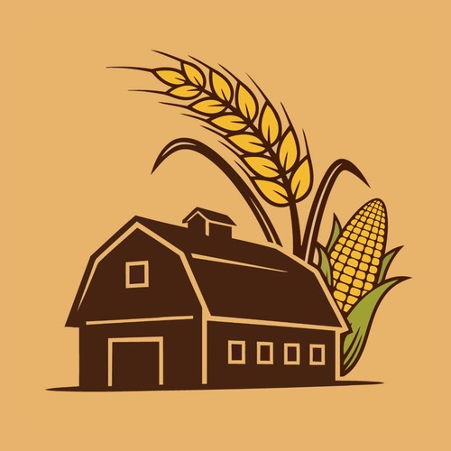
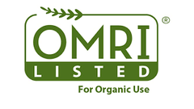

Soil Biology

Midwest Farms

Manure Management

Pond & Lake Health

Natural Heartland Solutions starts where every great crop starts — in the soil. Our formulas rebuild living soil biology, then carry that same biological power into manure pits and farm ponds. Biomentum, ABC Organic, and Pit and Pond Pucks are OMRI Listed. One ecosystem, restored from the ground up.
Everything we do builds on living soil biology. Tap any focus area to jump straight to the details.
Rebuild the biological engine beneath your crops. Biomentum, ABC Soil Health, and Aminos-N wake up native microbes and unlock tied-up minerals — naturally.
See soil solutions Get a soil planTurn hog barn waste into a stable, plant-available fertilizer asset. Pit Pucks lock in nutrients, cut down ammonia odors, and liquefy heavy sludge and crust.
See manure solutions Get a quoteRestore whole water ecosystems instead of chemical-shocking them. Pond Pucks starve algae, digest bottom muck, and protect fish with steady, balanced biology.
See pond solutions Get a pond plan

Before a single nutrient reaches your crop, it has to move through living soil. Our soil-health line rebuilds that biology from the ground up — activating native microbes, unlocking bound minerals, and helping every other input on your operation work harder. Start here, and the rest of your fertility program follows.
213.1 bu/acre untreated vs 230.9 bu/acre treated. +17.8 bu/acre. Single field, unreplicated.

OMRI ListedWake up the biological engine right beneath your feet. Biomentum is a microbial formula with a targeted blend of beneficial bacteria alongside mycorrhizal and saprophytic fungi. By re-establishing that ecosystem, it supports the plant's natural defenses and breaks down stubborn, locked-up minerals into forms your crops can actually use. Use it to treat manure or to improve forage and hay quality, and spend less on traditional chemical inputs.
Use Biomentum the first year. From year two on, Residue Digester takes the fall pass and breaks down residue. This is the conventional Residue Digester, for stalk and stubble breakdown after harvest.
ABC Soil Health is the conventional formula: water, molasses, fish, kelp, lactic acid bacteria, trace minerals, and humic acid. Those inputs feed root-zone biology, help keep nutrients where the crop can reach them, and give early growth a strong start.
ABC Organic is OMRI Listed for growers who need to stay inside organic standards. The label lines up the same way: water, molasses, fish, kelp, lactic acid bacteria, trace minerals, and humic acid. Together they loosen tight ground and feed the biology underground.
When heat waves, drought, or extreme weather strike, your crops shouldn't have to fight to survive. Aminos-N delivers a highly bioavailable dose of 18 essential L-form amino acids and 16 vital trace minerals directly to the plant. Because it provides a clean, easily digestible source of organic nitrogen, your crops don't have to waste valuable energy processing heavy synthetic fertilizers. Instead, they can focus that energy on steady growth and a push for top-tier yields.
2 qt Biomentum in the fall, 2 to 3 qt ABC at planting, and 2 qt ABC with the post-emerge pass.
Traditional manure management is an uphill battle against crusting, harsh odors, and critical nutrient loss. Our biological approach shifts the focus from simple waste storage to active nutrient optimization — turning your barn's waste into a high-value fertilizer asset. Drop these all-natural, OMRI Listed pucks directly into your facility's waste system and a focused microbial digestion cascade goes to work.
Starting at $250 per box of 60.
Pricing depends on volume, so call for a quote. Dealer pricing available.
The biology locks vital nutrients into a stable, plant-available liquid state, preventing valuable fertilizer elements from escaping into the atmosphere as gas. What you store stays usable when it's time to apply it to your fields.
By stabilizing nitrogen, you help reduce the harsh, ambient ammonia smells that lead to sick pigs and poor working conditions. The result is a barn that's easier to breathe in and better for your animals' performance.
Lowering corrosive ammonia gas levels protects your investment, preventing long-term structural and equipment deterioration inside the barn. Less corrosion means fewer repairs and a longer service life for your facility.
These specialized microbes speed up decomposition to reduce heavy bottom sludge, cut down thick crust, and ease foaming methane hazards — keeping your pit flowing and safer to work around.

For farm ponds, acreages, lake associations, and golf courses. Traditional aquatic management relies on harsh "chemical shock" treatments that deliver only temporary visual fixes while leaving underlying issues untouched. Pond Pucks use live beneficial microbes to restore the whole system. Drop them in and a steady biological cleanup gets to work.
Starting at $250 per box of 60.
Pricing depends on volume, so call for a quote. Dealer pricing available.
Safe for fish, livestock, wildlife and irrigation. Works even better with aeration.
Use 50 pucks per surface acre the first month, or 100 for heavy muck or algae. Then use 10 per acre each month from April to October. On a typical 1-acre pond, that is about 2 boxes a year.
Toxic algae blooms are aggressively driven by excess nitrogen and phosphorus. These specialized microbes prevent blooms by outcompeting algae for those vital nutrients, locking them safely into microbial biomass instead.
Even when external runoff is reduced, heavy bottom muck and sludge act as a hidden reservoir that constantly feeds algae. Our biological solution breaks this recycling loop by digesting the muck at the bottom of the column.
Sudden chemical algaecides cause rapid plant die-offs that lead to dangerous oxygen depletion and recurring blooms. Our microbes suppress unwanted growth gradually, protecting fish and supporting healthier, balanced aquatic life.
A broader mix of live beneficial microbes speeds up the natural breakdown of organic matter, improving water clarity and cutting the internal nutrient loading that fuels future blooms, year after year.
Looking for soil-health dosing for your acreage? Those rates are tailored to your crop and ground — contact us for a soil plan.
Each tool opens in a new tab.
2026 season program calculator. Type your acres and choose conventional or organic.
Open in a new tabPit Puck plan for one barn or a whole operation, with a printable summary.
Open in a new tabThe 2026 Algona corn trial: same field, same hybrid, weighed at the scale.
Open in a new tabNatural Heartland Solutions is a farmer-developed agricultural enterprise dedicated to introducing premium, environmentally responsible solutions across the American Midwest — rooted in the belief that healthy soil is the foundation of every successful operation.

Born and raised on an Iowa farm, Evan's deep connection to the land has shaped his entire life and career. He co-founded this company while pursuing his higher education and serving his country with the Iowa Air National Guard, a commitment that has included multiple overseas deployments. Driven by a passion for rural sustainability, Evan helped implement our high-efficiency biological formulas to give producers a proven alternative to heavy synthetics. He knows the sacrifice of service, the realities of modern farming, and is fully invested in the future of the American producer.
Born and raised in Iowa with family roots in the state's earliest farming settlements, Wyatt has always understood the challenges facing modern growers. While studying at Iowa State University, he partnered with Northwest Iowa operators to launch the Natural Heartland Solutions signature line of organic pucks. As distributor of these lines, his mission goes beyond moving product — he works directly with the agricultural community to educate growers on manure optimization, compliance, and sustainable soil health. Wyatt knows the soil, the regulations, and what Iowa farmers need to succeed.
Wyatt Streit · 515-890-4075 · wyatt@nhsolutions.co
Evan Deal · (515) 341-1921 · evan@nhsolutions.co
Pricing depends on volume, so call for a quote. Dealer pricing available.
Iowa sales tax exemption forms are accepted for farmers and resellers.
Check Out Our Socials